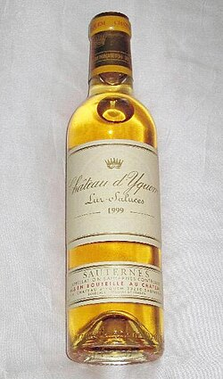
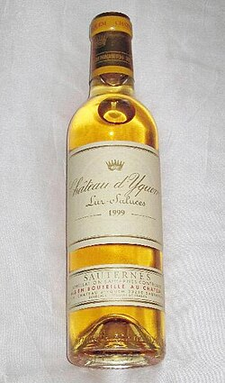

Selection Guides
Wines
Wines by Region
Bordeaux
Left Bank
Médoc
Graves
Sauternes
Sauternes is a sweet wine region in Bordeaux, known for its botrytized wines.

Watch this video for more information:
Keywords: ideas, thoughts, concepts, creativity, innovation
Sauternes is a sweet wine region in Bordeaux, known for its botrytized wines.

Watch this video for more information: